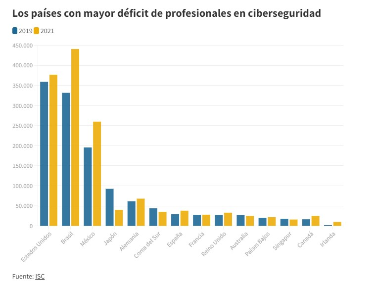

Según International Data Corporation (IDC), en México en el año de 2022 se registraron más de 85 mil millones de ciberataques llevándose así el primer lugar donde se registraron más ataques a nivel LATAM, esto nos lleva a la necesidad de tener más o mejores estrategias de ciberseguridad.
En el 2021 según el informe Global Information Security Workface Study 2021 echo por la ISC, a nivel mundial faltaban 2.7 millones de profesionales de ciberseguridad en todo el mundo, hablando a nivel Latinoamérica el déficit de este empleo llega a los 701,000 profesionales. Esto es lo que nos IMF smart education: " Lo más llamativo es que si comparamos las cifras de 2021 con las que este mismo estudio daba en 2019, la conclusión es clara: no solo faltan profesionales de ciberseguridad, sino que, de hecho, cada año faltan más."1
El 95% de las violaciones de datos son causadas por errores humanos. Esto es lo que nos dice la universidad veracruzana (2019). "Si, en efecto es así. En un estudio realizado por IBM se demostró que la inmensa mayoría de los ataques perpetrados por ciberdelincuentes alcanzaban el éxito debido a algún tipo de error humano". y esto es causado gracias a que los hackers aprovechan el desconocimiento que pueden tener las personas sobre el tema y un ejemplo claro son las contraseñas, ya que no conocemos las características de una contraseña aceptable.
Utilizar contraseñas seguras es importante porque las contraseñas débiles son más susceptibles a ser adivinadas o descubiertas por atacantes. Se recomienda utilizar contraseñas largas, únicas y complejas, y considerar el uso de administradores de contraseñas para gestionarlas de forma segura.
El cifrado de datos es el proceso de convertir información en un código ilegible para protegerla contra el acceso no autorizado. Es importante porque garantiza la confidencialidad de los datos, incluso si son interceptados o robados, ya que solo las personas autorizadas con la clave de cifrado pueden descifrarlos.
La seguridad de la nube se refiere a las medidas de protección implementadas para proteger los datos almacenados y las aplicaciones utilizadas en servicios de nube. Al utilizar servicios de nube, debes asegurarte de utilizar proveedores confiables, implementar autenticación segura, cifrar tus datos, realizar copias de seguridad y gestionar adecuadamente los permisos de acceso.
El monitoreo de seguridad es el proceso de supervisar y analizar continuamente los eventos y actividades de seguridad en una red o sistema para detectar y responder a posibles amenazas. Es importante porque permite identificar actividades maliciosas, intrusiones o anomalías en tiempo real, lo que facilita una respuesta rápida y efectiva.
Las actualizaciones de software son importantes porque corrigen errores, parchean vulnerabilidades conocidas y mejoran la seguridad de las aplicaciones y sistemas. Mantener tus programas y sistemas operativos actualizados reduce el riesgo de explotación por parte de los atacantes y te ayuda a estar protegido contra las últimas amenazas de seguridad.